Profile

안녕하세요. 웹 개발자 엄지훈입니다.
저는 프론트엔드와 백엔드 모두에 능숙한 풀스택 개발자로서, 다양한 기술을 활용해 웹 서비스를 기획부터 구현까지 책임감 있게 완성할 수 있습니다.AWS와 NCP(Naver Cloud Platform)를 이용해 서버를 직접 호스팅하고 운영해본 경험이 있으며,
Docker와 Jenkins를 활용해 CI/CD 파이프라인을 구축함으로써 배포 자동화 및 팀 개발 효율 향상에도 기여한 경험이 있습니다.
앞으로도 다양한 기술을 적극적으로 익히고, 협업에 능한 개발자로 성장해 나가겠습니다.
Projects
담당한 프로젝트를 기간 순으로 배치했습니다.
1. HouseKeeping (2024.07.08 ~ 2024.08.25)
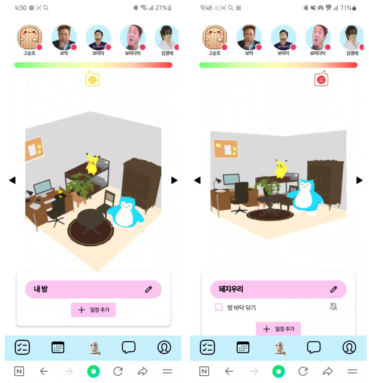
메인 화면
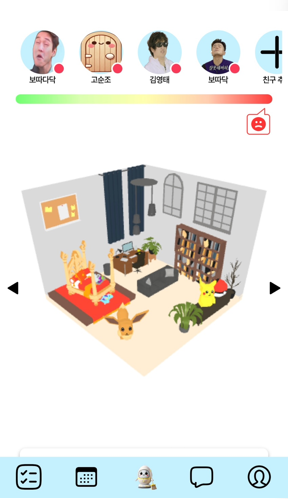
Three.js를 활용한 방 꾸미기 기능
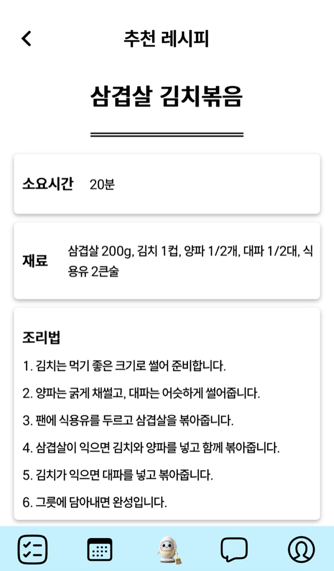
CLOVA AI를 활용한 레시피 추천 기능
친구 등록을 한 사람들과의 채팅 기능
깃허브 페이지 및 발표 자료
프로젝트 소개
HouseKeeping은 혼자 자취하는 사회 초년생들을 위한 라이프 매니지먼트 웹 서비스입니다.
사용자의 의식주를 종합적으로 관리할 수 있도록 다양한 기능을 제공합니다.
사용자의 의식주를 종합적으로 관리할 수 있도록 다양한 기능을 제공합니다.
- 방 청소 루틴 설정 및 미이행 시 알림 메시지와 오염도 증가 기능
- 냉장고 속 식재료 관리 및 AI 기반 요리 추천 기능
- 옷장 속 의류 등록 및 날씨 기반 옷차림 추천 기능
- 친구 맺기 기능, 친구들과 실시간 채팅 및 방 방문 기능
개발 환경 및 툴
Frontend
- HTML, CSS, JavaScript
- React, Vite, Three.js
- Figma
Backend
- Java, Spring Boot, Node.js
- JPA, JSON, QueryDSL
- MySQL
호스팅 & DevOps
- Jenkins, Docker, Nginx, Certbot
- Naver Cloud
협업 및 개발 도구
- IntelliJ, Gradle, Postman
- Git, GitHub, Slack, Notion
- Hyper CLOVA(AI), Lombok
내가 기여한 부분
클라우드 인프라 및 자동화
- Naver Cloud Platform을 활용하여 프로젝트를 호스팅
- VPC를 서브넷으로 분리해 역할에 따라 보안성을 강화 (DB/소켓 서버는 외부 접근 차단)
- 로드 밸런서를 통해 트래픽 분산으로 서비스 안정성 확보
- Docker를 활용해 환경에 관계없이 동일한 배포 환경 구성
- Jenkins 기반 CI/CD 파이프라인 구축으로 자동 빌드 및 배포 구현
- Certbot을 이용한 SSL 인증서 발급으로 네트워크 통신 암호화 및 보안성 향상
소켓을 활용한 실시간 통신 기능 개발
- Node.js를 활용한 Socket.IO 서버 구축으로 실시간 통신 기반 마련
- 1:1 채팅 및 그룹 채팅 기능 구현, 팝업 알림 UI 개발
- 접속 상태를 실시간 DB에 반영하고 친구에게 알림 기능 구현
Three.js를 활용한 방 꾸미기 기능 개발
- 벽지/바닥/가구를 자유롭게 배치 및 커스터마이징 할 수 있는 기능 구현
- 가구 이동, 회전, 크기 조절 기능 구현
- 친구의 방을 방문하여, 친구가 꾸민 방을 구경하는 기능을 구현
AI를 활용한 레시피 추천 기능 개발
- 냉장고에 식재료 등록, 유통기한 및 메모 설정 기능 구현
- 유통기한 임박 시 CoolSMS API를 활용한 경고 메시지 발송
- Hyper CLOVA API를 통해 현재 식재료 기반 맞춤형 레시피 추천
- 레시피 추천 시 요리 분류/인분 수 지정 등 세부 조건 설정 가능
데이터베이스 설계 및 구축
- 요구사항 정의서를 바탕으로 ERD 설계
- Spring Data JPA 기반으로 DB 테이블 및 연관 관계 매핑
2. Q2Beat (2024.06.03 ~ 2024.07.05)
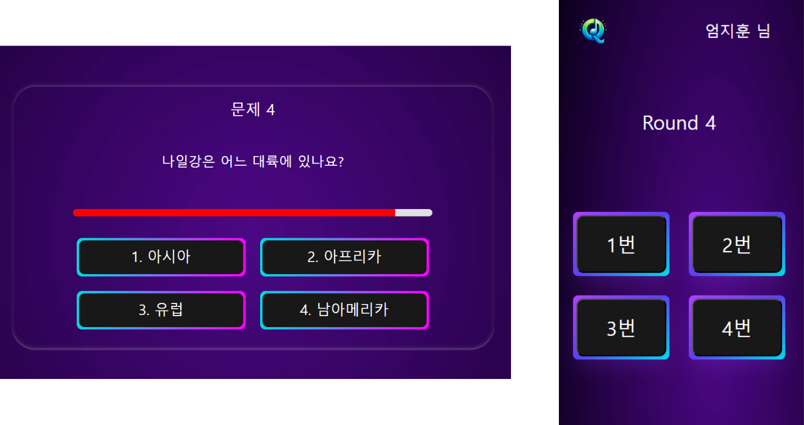
4지선다 퀴즈(호스트 화면 및 참여자 화면)
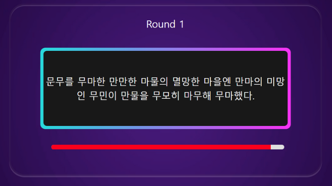
잰말놀이(호스트 화면)
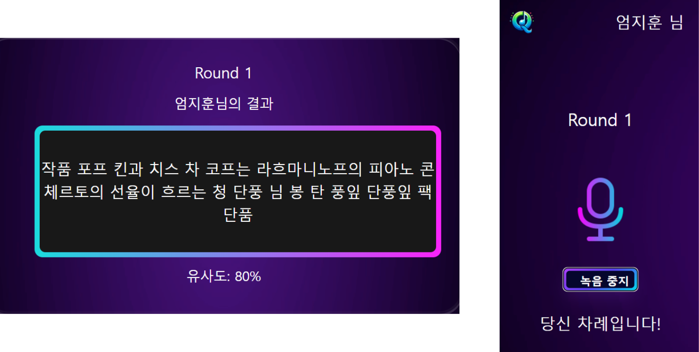
잰말놀이(참여자 화면 및 결과 화면)
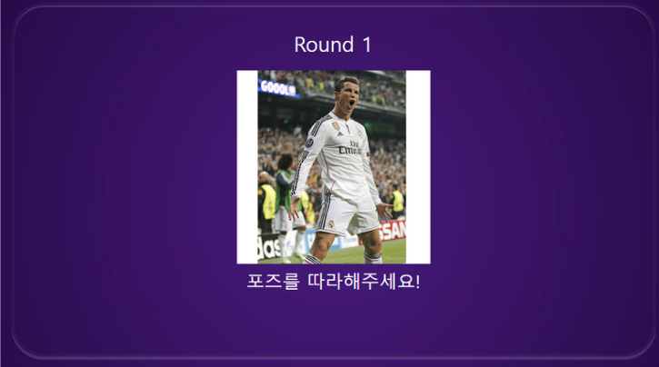
포즈 따라하기(호스트)
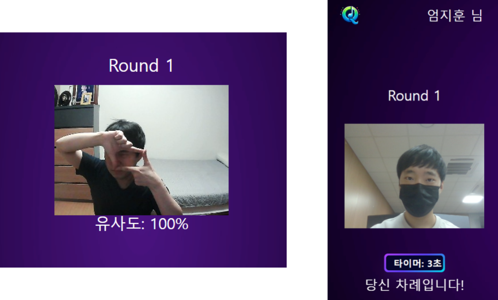
포즈 따라하기(참여자 화면 및 결과 화면)
깃허브 페이지 및 발표 자료
프로젝트 소개
핸드폰만 있으면 누구나 참여할 수 있는 실시간 퀴즈 게임 플랫폼입니다.
호스트가 방을 생성하고, 참여자는 QR 코드 또는 URL을 통해 모바일로 입장하여 다양한 퀴즈를 함께 풀며 순위를 겨루는 형태입니다.
제공하는 퀴즈 게임들은 다음과 같습니다.
호스트가 방을 생성하고, 참여자는 QR 코드 또는 URL을 통해 모바일로 입장하여 다양한 퀴즈를 함께 풀며 순위를 겨루는 형태입니다.
제공하는 퀴즈 게임들은 다음과 같습니다.
- 특정 주제를 선택해서 즐기는 4지선다 퀴즈
- 음성 인식 AI와 문자열 비교 알고리즘을 활용한 잰말놀이 퀴즈
- 머신러닝 기반 포즈 인식을 활용한 동작 따라하기 퀴즈
- 플레이되는 음악을 듣고 음악의 제목을 맞추는 퀴즈
개발 환경 및 툴
Frontend
- HTML, CSS, JavaScript
- React, Vite, AJAX
- Figma
Backend
- Java, Python, Spring Legacy
- JSON, MyBatis, MySQL
호스팅 & 운영
- AWS, Vercel, Certbot
협업 및 개발 도구
- IntelliJ, Gradle
- Git, GitHub, Notion
- Lombok, qrcode.react
사용 알고리즘
- Levenshtein(두 문자열의 유사도 측정 로직 구현 시 사용)
내가 기여한 부분
프로젝트 호스팅 및 보안
- 프론트엔드 서버는 Vercel, 백엔드 서버는 AWS로 호스팅
- Certbot을 이용한 SSL 인증서 발급으로 네트워크 통신 암호화 및 보안성 향상
실시간 웹소켓 통신
- SocketJS 기반으로 호스트-참여자 간 실시간 통신 구현
- 게임 진행 상태, 정답 여부, 점수 등을 실시간으로 동기화
게임 방 생성 및 입장 기능
- 호스트가 방을 생성하면 고유 방 번호를 발급하고, 참여자는 QR 코드 또는 URL을 통해 해당 방에 입장 가능
- QR 코드 및 URL을 통하여 호스트가 생성한 방에 입장을 할 수 있게 하는 기능을 개발했습니다.
- 호스트는 퀴즈 유형, 주제, 라운드 수, 제한 시간 등을 설정 가능
- 참여자는 닉네임 설정 가능
4지선다 퀴즈 구현
- 다양한 주제(상식, IT, 스포츠 등)의 객관식 퀴즈 제공
- 호스트 화면: 문제, 보기를 출력하고, 제한 시간 종료 시 자동으로 정답 공개 및 라운드 이동
- 참여자 화면: 정답 선택 UI, 정답 결과 및 현재 점수 표시
- 모든 라운드 종료 시 호스트는 전체 순위, 참여자는 개인 등수 확인 가능
잰말놀이(음성 퀴즈) 구현
- 발음이 어려운 문장을 제한 시간 내 정확히 따라 말하는 퀴즈
- 참여자의 음성을 .wav 파일로 저장하는 기능 구현
- Clova Speech Recognition(CSR)으로 음성을 텍스트로 변환
- Levenshtein 알고리즘을 활용해 정답 문장과의 유사도 계산
포토제닉 퀴즈(동작 따라하기) 구현
- 제시된 포즈 이미지를 보고 비슷한 포즈를 따라하는 퀴즈
- Teachable Machine을 이용해 다양한 포즈 학습 후 동작 인식 AI 모델 제작
- 타이머 종료 시 React Webcam을 통해 이미지 캡처, AI 모델이 포즈 유사도를 측정하여 점수화
3. JavaGym (2024.03.25 ~ 2024.04.22)
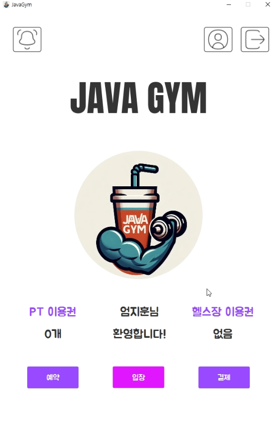
메인 화면
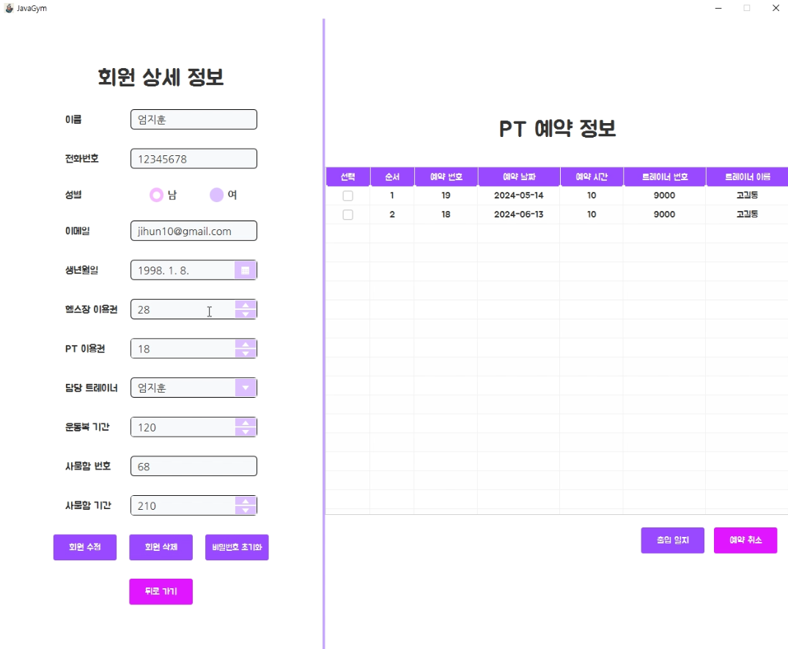
관리자 화면
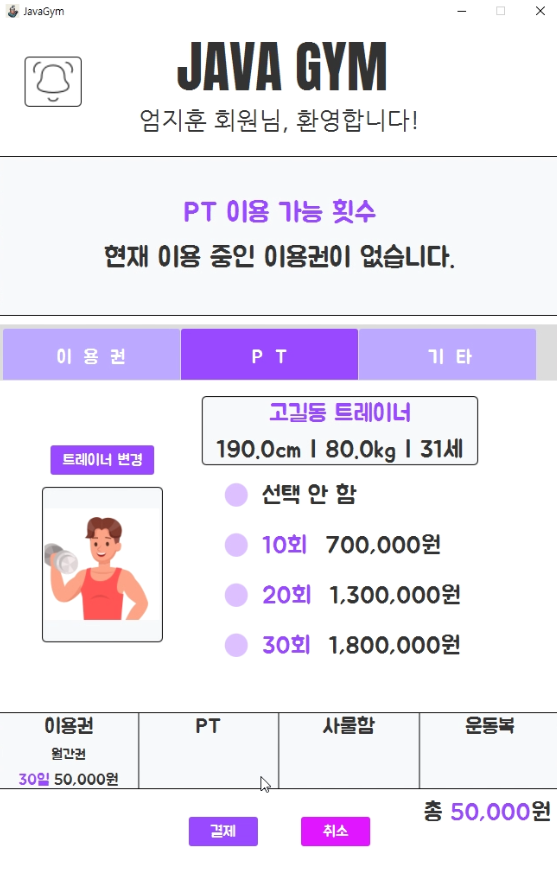
이용권 구매 화면
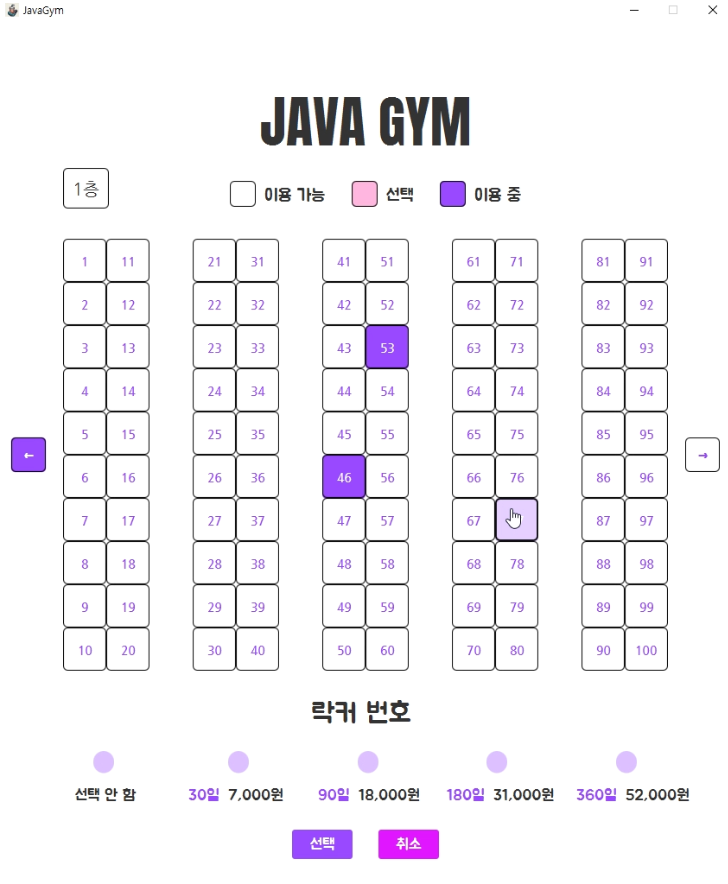
락커 선택 화면
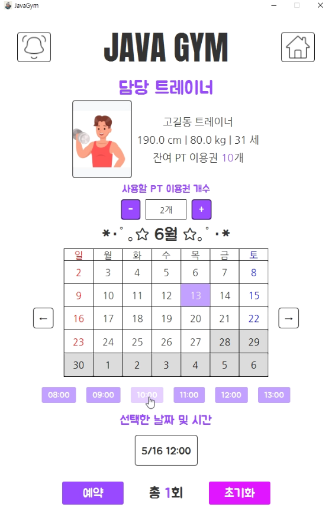
PT 예약 화면
깃허브 페이지 및 발표 자료
프로젝트 소개
헬스장 이용자를 위한 키오스크 프로그램으로, 회원, 트레이너, 관리자 역할에 따라 각기 다른 기능을 제공합니다.
- 회원: 헬스장 입장, PT 예약, 이용권 결제, 담당 트레이너 및 사물함 관리 등의 기능 제공
- 트레이너: 담당 회원 조회 및 PT 예약 정보 관리 기능 제공
- 관리자: 회원 및 트레이너 정보 조회 및 수정, 예약 및 결제 관리, 출입 로그 열람 등의 기능 제공
개발 환경 및 툴
Frontend
- JavaFX, Scene Builder, CSS, Figma
Backend
- Java, MySQL
협업 및 개발 도구
- IntelliJ, Gradle
- Git, GitHub, Notion
- Lombok
내가 기여한 부분
회원 기능 개발
- 회원가입 및 로그인 기능 구현
- 메인 페이지에서 PT 이용권 개수, 헬스장 이용권 남은 일수 확인 기능 구현
- 회원 정보, 사물함 번호, 담당 트레이너 정보를 확인할 수 있는 ‘내 정보’ 페이지 구현
- PT 예약 가능 시간 확인 및 예약 기능 구현
- 이용권 결제 페이지 구현 (헬스장, PT, 사물함 이용권 구매)
- 트레이너 목록 열람 및 담당 트레이너 지정 기능 구현
- 사용 가능한 사물함 목록 확인 및 선택 기능 구현
데이터베이스 설계 및 서버 측 자동화 처리
- 요구사항을 기반으로 데이터베이스 설계 및 구축
- 반복 사용되는 로직 처리를 위한 스토어드 프로시저 다수 작성
- 이벤트 스케줄러를 활용하여 매일 자정마다 이용권 남은 일수를 자동 차감하는 기능 구현